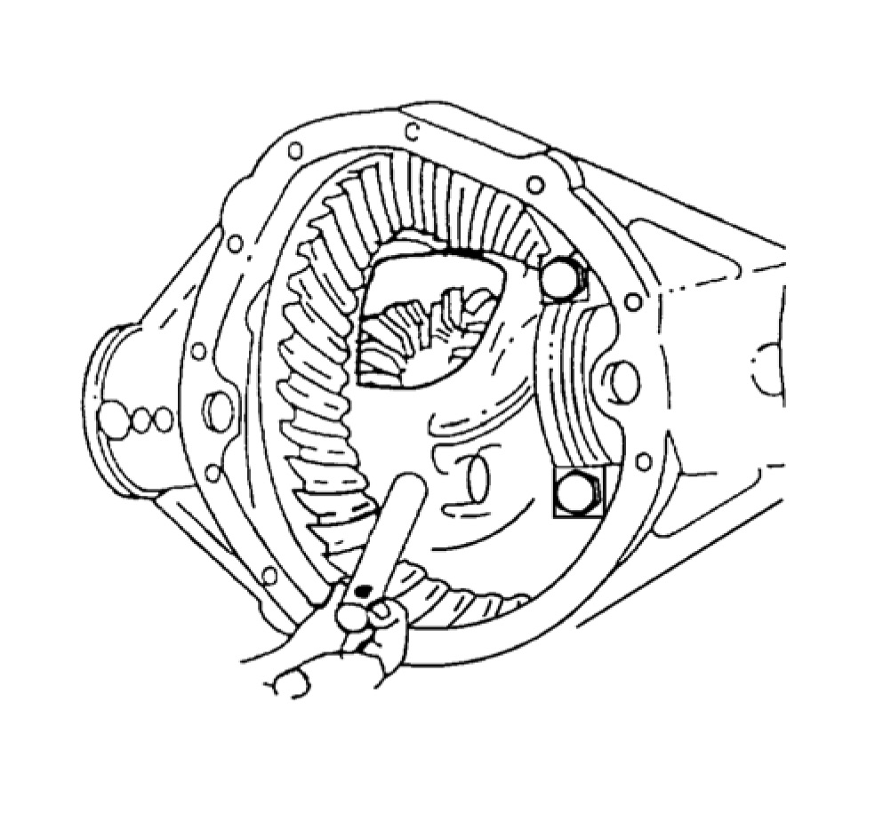
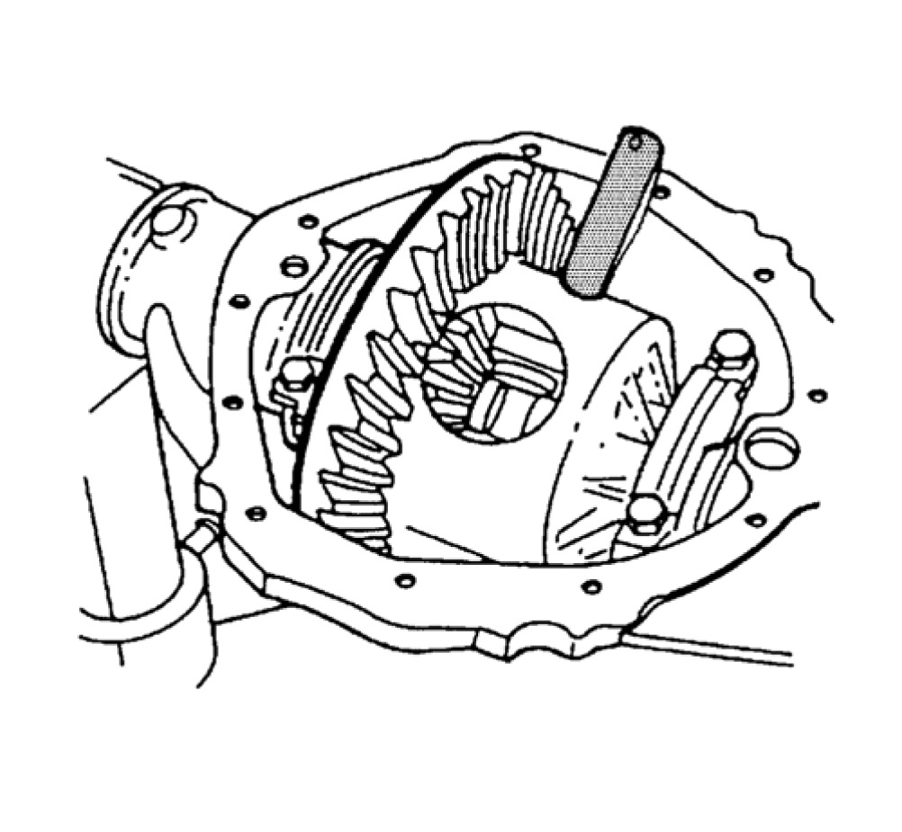
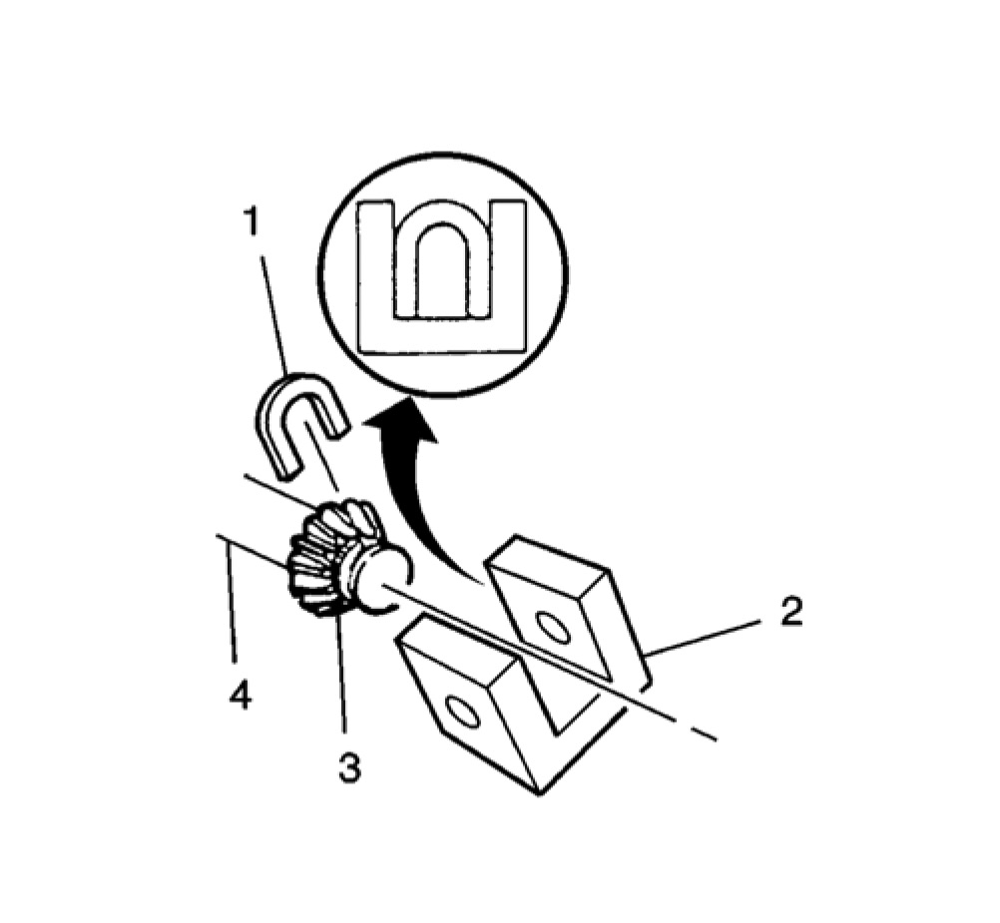
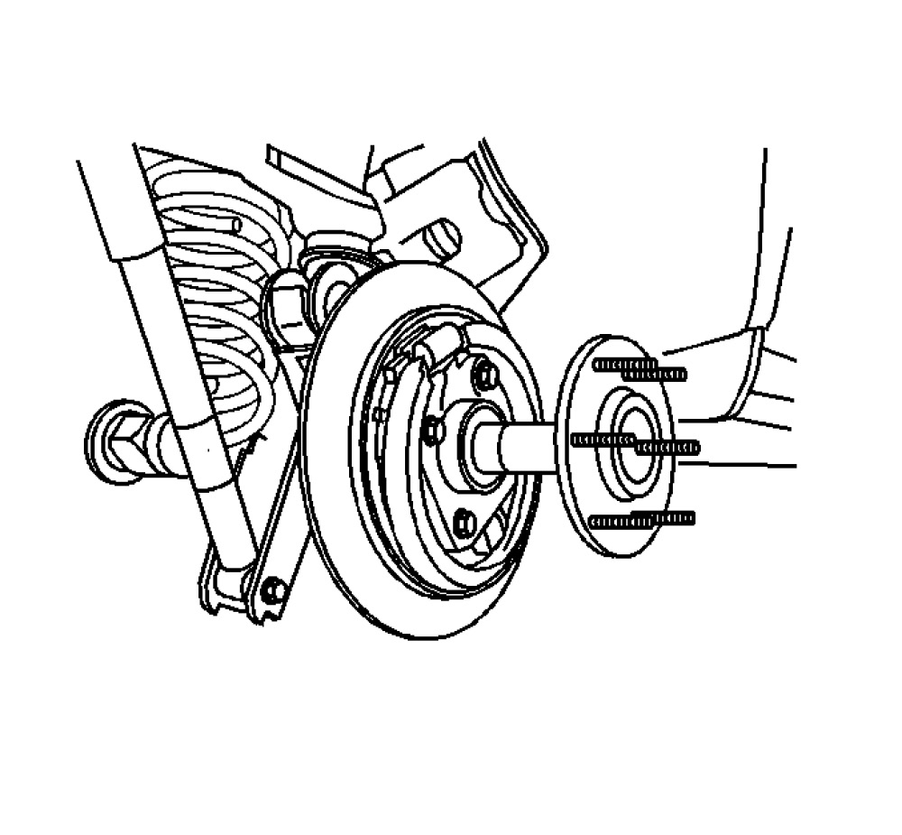
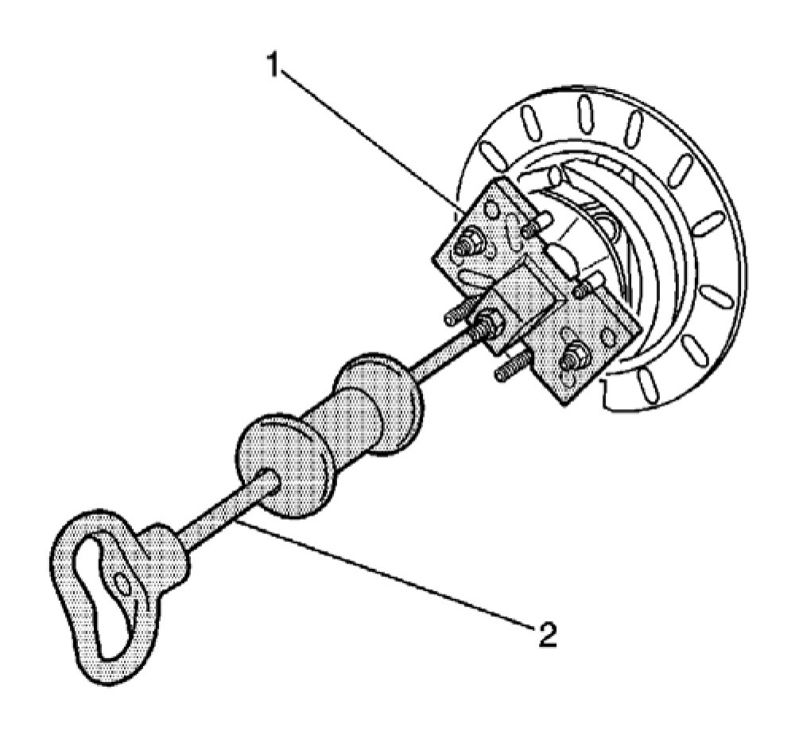
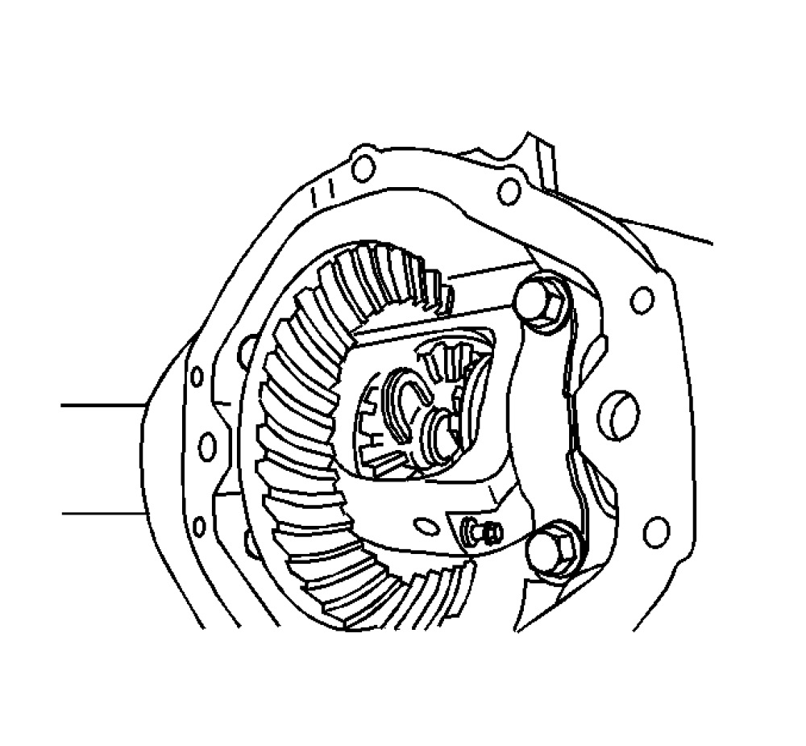
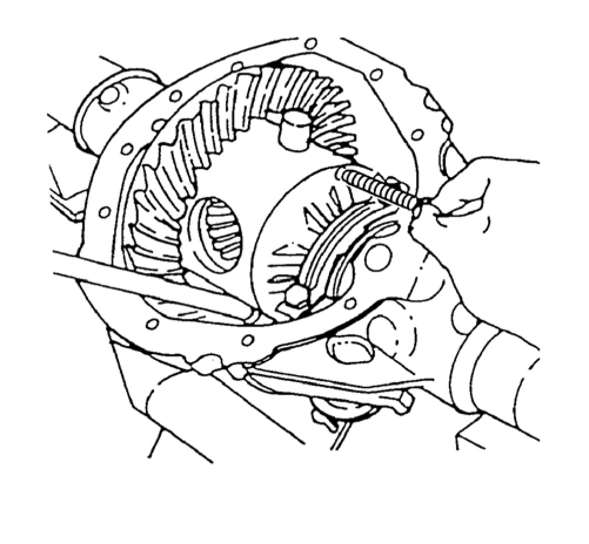

Rear Axle Shaft Replacement (8.6, 9.5 LD Axle)
Rear Axle Shaft Replacement (8.6, 9.5 LD Axle)
Tools Required
- J 2619-01 Slide Hammer
- J 45859 Axle Remover
Removal Procedure
1. Raise the vehicle.
2. Remove the tire and wheel assembly.
3. Remove the brake caliper. Refer to Rear Brake Caliper Replacement Removal and Replacement.
4. Remove the rear wheel speed sensor. Refer to Rear Wheel Speed Sensor Replacement Service and Repair.
5. Remove the rear axle housing cover and the gasket. Refer to Rear Axle Housing Cover and Gasket Replacement Service and Repair.
6. Remove the pinion shaft locking bolt.

7. On axles without a locking differential, remove the pinion shaft.

8. On axles with a locking differential, remove the shaft part way. Rotate the case until the pinion shaft touches the housing.

9. On axles with a locking differential, use a screwdriver, or a similar tool, in order to enter the differential case and rotate the C-lock (1) until the C-lock aligns with the thrust block (2).
10. Push the flange of the axle shaft (1) toward the differential.
11. Remove the C-lock from the button end of the axle shaft.

Important: When removing the axle shaft, do not rotate the shaft. Rotating the shaft will misalign the gears. Misaligning the gears will make the installing of the axle shaft difficult.
12. Remove the axle shaft from the housing.

13. If the axle is difficult to remove, use the J 45859 (1) and the J 2619-01 (2) to remove the axle shaft from the housing.
Installation Procedure
Important: Carefully insert the axle shaft in order to not damage the seal.
1. Install the axle shaft into the rear axle housing.
2. Slide the axle shaft into place allowing the splines to engage the differential side gear.

3. On axles without a locking differential, place the C-lock on the button end of the axle shaft.
4. On axles with a locking differential, keep the pinion shaft partially withdrawn.
5. On axles with a locking differential, place the C-lock (1) on the axle shaft (3) so that the ends are flush with the thrust block (2).
6. Pull the shaft flange outward in order to seat the C-lock in the differential gear.

7. Align the hole in the pinion shaft with the bolt hole in the differential case.
Notice: Use the correct fastener in the correct location. Replacement fasteners must be the correct part number for that application. Fasteners requiring replacement or fasteners requiring the use of thread locking compound or sealant are identified in the service procedure. Do not use paints, lubricants, or corrosion inhibitors on fasteners or fastener joint surfaces unless specified. These coatings affect fastener torque and joint clamping force and may damage the fastener. Use the correct tightening sequence and specifications when installing fasteners in order to avoid damage to parts and systems.
8. Install the new pinion shaft locking bolt.
Tighten
- For the 8.6 inch axle, tighten the pinion shaft locking bolt to 36 Nm (27 lb ft).
- For the 9.5 LD inch axle, tighten the pinion shaft locking bolt to 50 Nm (37 lb ft).
Important: End play is the in and out movement of the rear axle shaft. Radial play is the up and own movement in the rear axle shaft.
9. Check the rear axle shaft end play and the radial play. The rear axle shaft end play should be 0.012 inch per side and the radial play should be 0.002-0.003 inch. If the rear axle shaft is NOT within the specifications, replace any excessively worn parts.
10. Install the rear axle housing cover and the gasket. Refer to Rear Axle Housing Cover and Gasket Replacement Service and Repair.
11. Install the brake caliper. Refer to Rear Brake Caliper Replacement Removal and Replacement.
12. Install the rear wheel speed sensor. Refer to Rear Wheel Speed Sensor Replacement Service and Repair.
13. Install the tire and wheel assembly.
14. Fill the rear axle with axle lubricant. Use the proper fluid. Refer to Rear Axle Lubricant Level Inspection Service and Repair.
15. Lower the vehicle.